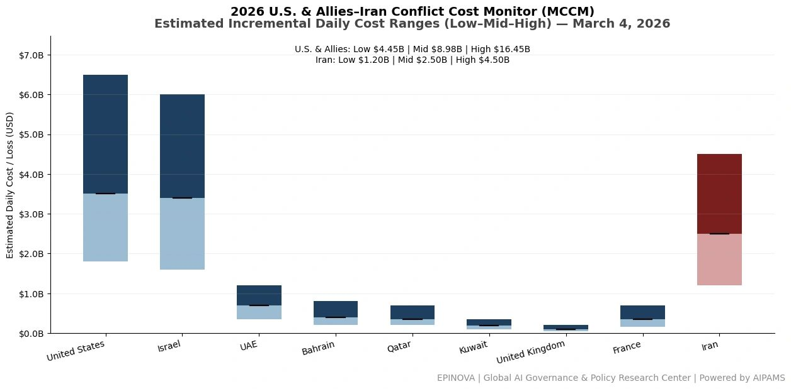
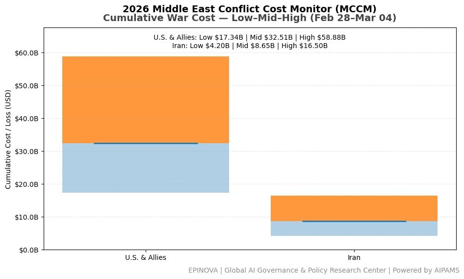
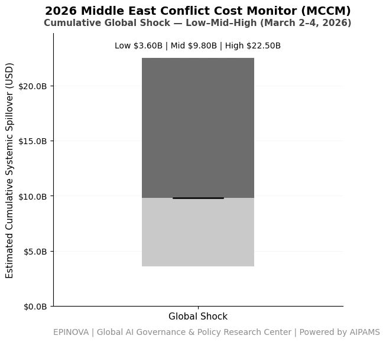

2026 U.S. & Allies–Iran Conflict Cost Monitor (MCCM): March 4
Powered by AIPAMS
Introduction
The 2026 Middle East Conflict Cost Monitor (MCCM) provides an event-driven, scenario-based assessment of daily conflict-related expenditures and losses across major state actors involved in the crisis. Using a structured low–mid–high estimation framework, the series aggregates publicly available operational indicators, force posture changes, strike intensity proxies, reported material damage, and infrastructure disruptions to produce comparable daily cost ranges.
The framework distinguishes between (1) direct military expenditures and asset losses, (2) infrastructure and energy-sector disruption costs, and (3) systemic market spillovers (“Global Shock”), which are reported separately from war-specific accounts.
MCCM is designed as a rolling monitoring instrument rather than a definitive accounting ledger. All estimates are expressed in current U.S. dollars (USD) and reflect bounded scenario approximations intended for comparative analysis and policy discussion. High-range estimates may incorporate upper-bound scenario adjustments where reported high-value asset losses remain under verification. Estimates are updated as verification improves and may be revised retroactively.

Note:
Ranges reflect scenario-bounded estimates. Low = minimum confirmed observable losses. Mid = most probable range based on publicly available reporting and operational cost parameters. High = upper-bound scenario including reported but not independently verified high-value asset losses. Figures exclude Global Shock (systemic market spillovers). All values are incremental (24-hour estimate).

Note:
Cumulative totals represent aggregated daily scenario ranges. High range includes scenario-based upper-bound adjustments (e.g., reported strategic asset losses). Figures exclude Global Shock. Values rounded; subject to revision as verification improves.

Note:
Global Shock reflects cumulative systemic spillovers (energy, shipping, insurance, airspace) during the reporting period and is excluded from direct military cost totals.
Selected References:
Islamic Revolutionary Guard Corps. (2026, March 4). Operation True Promise-4 communiqué No. 19. https://www.sepahnews.com
Reuters. (2026, March 4). Iran says it struck U.S. naval vessels in the Indian Ocean as regional conflict escalates. https://www.reuters.com/world/middle-east/iran-says-struck-us-naval-vessels-indian-ocean-2026-03-04
Associated Press. (2026, March 4). Iran claims missile strikes on U.S. ships as Israel conflict widens. https://apnews.com/article/iran-us-warships-strike-2026
Al Jazeera. (2026, March 4). Iran launches new missile waves in Operation True Promise-4 targeting Israeli and U.S. positions. https://www.aljazeera.com/news/2026/3/4/iran-launches-new-missile-waves-operation-true-promise-4
CNN. (2026, March 4). U.S. forces intercept multiple Iranian missiles as conflict spreads across Middle East. https://www.cnn.com/2026/03/04/middleeast/iran-missile-attacks-us-forces-intl
BBC News. (2026, March 4). Middle East conflict escalates as Iran launches additional missile barrages. https://www.bbc.com/news/world-middle-east-2026
U.S. Department of Defense. (2026, March 3). Pentagon statement on force posture adjustments in the Middle East. https://www.defense.gov/News/Releases/Release/Article/
U.S. Central Command. (2026, March 4). CENTCOM update on ongoing Iranian missile and drone activity in the region. https://www.centcom.mil/MEDIA/PRESS-RELEASES
The New York Times. (2026, March 4). U.S. deploys additional bombers and naval assets as Iran-Israel conflict widens. https://www.nytimes.com/2026/03/04/world/middleeast/us-bombers-middle-east.html
The Washington Post. (2026, March 4). Pentagon moves B-2 and B-52 bombers closer to Middle East amid Iran escalation. https://www.washingtonpost.com/national-security/2026/03/04/b2-b52-middle-east
Financial Times. (2026, March 4). Oil markets surge as Iran-Israel conflict threatens Gulf shipping routes. https://www.ft.com/content/middle-east-oil-market-2026
Bloomberg. (2026, March 4). Shipping insurers raise risk premiums as Middle East conflict spreads. https://www.bloomberg.com/news/articles/2026-03-04/shipping-insurance-premiums-rise-middle-east-war
U.S. Missile Defense Agency. (2024). Terminal High Altitude Area Defense (THAAD) system overview. https://www.mda.mil/system/thaad.html
Congressional Budget Office. (2021). Costs of missile defense systems including THAAD. https://www.cbo.gov/publication/57055
CSIS Missile Defense Project. (2024). THAAD (Terminal High Altitude Area Defense). https://missilethreat.csis.org/system/thaad/
International Institute for Strategic Studies. (2025). The Military Balance 2025. https://www.iiss.org/publications/the-military-balance
U.S. Navy. (2024). Arleigh Burke–class guided missile destroyer fact file. https://www.navy.mil/Resources/Fact-Files/Display-FactFiles/Article/2169795/arleigh-burke-class-destroyers
U.S. Air Force. (2024). B-2 Spirit bomber fact sheet. https://www.af.mil/About-Us/Fact-Sheets/Display/Article/104482/b-2-spirit
U.S. Air Force. (2024). B-52 Stratofortress fact sheet. https://www.af.mil/About-Us/Fact-Sheets/Display/Article/104465/b-52-stratofortress
Share this post: